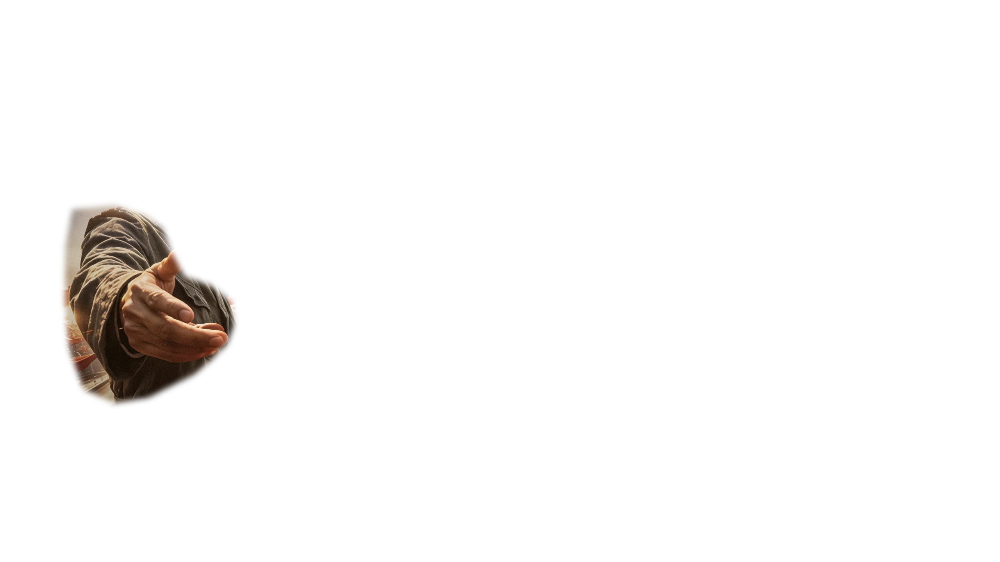

HONGTONG · ROOTED TOGETHER · STAGE 03
主页正在建设中...
古树、生肖与山河，即将在这里重新展开。
十二生肖 · 同根溯源
古树
module-tree · 待接入
十二生肖 · 各归其枝
生肖卡牌
module-cards · 待接入
山河同脉 · 籍贯分布
五湖四海
module-map · 待接入
时 空 正 在 展 开
轻触屏幕，开启时空

轻触屏幕，开启我们的故事
HONGTONG · ROOTED TOGETHER · STAGE 03
古树、生肖与山河，即将在这里重新展开。
十二生肖 · 同根溯源
module-tree · 待接入
十二生肖 · 各归其枝
module-cards · 待接入
山河同脉 · 籍贯分布
module-map · 待接入